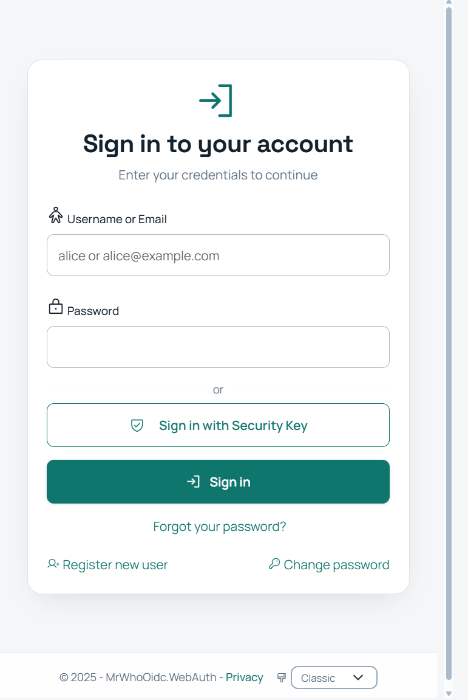

Feature overview
MrWhoOidc features
Sign users in, authorize API access, and manage identity across tenants. The supported flows and administration tools are listed below.
OpenID Connect & OAuth 2.0
Connect web applications, services, and devices using the flows below. Discovery and JWKS endpoints provide client configuration and public signing keys.
Security Extensions
Proof-of-possession tokens, pushed authorization requests, JWT-secured requests and responses, and automatic key rotation.
The sign-in page
Users can sign in with a password or a registered security key. Password recovery and registration are available from the same page.
Tenant branding settings let you adapt the sign-in experience to your organization.
View full-size screenshot{kind=link}

Multi-Tenancy & Administration
Each tenant gets isolated realms, its own admin UI, and platform-level management tools.
Development tools
CLI with MCP server for AI agents, .NET Aspire for local dev, Docker Compose for deployment, and Playwright E2E tests.
mrwho-cli)Deployment files and guides
The public deployment repository includes Compose files, configuration templates, and instructions for setup and verification.